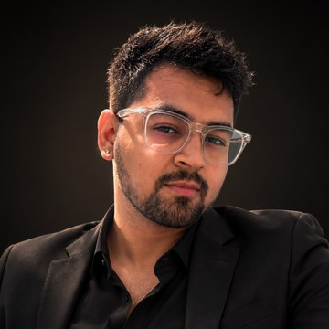
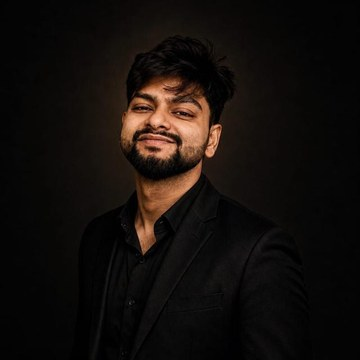
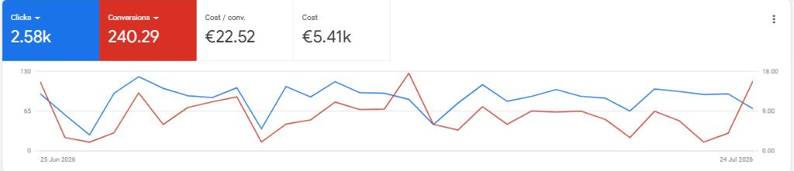
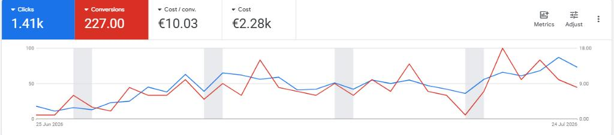
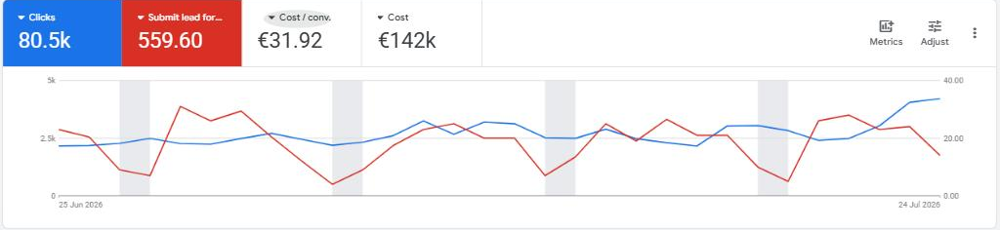
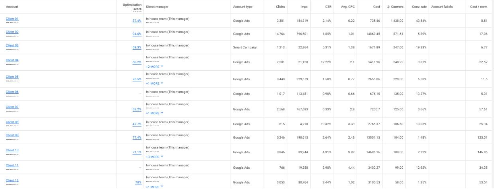

Spending on marketing but not sure what's actually working? We run your paid, SEO and social as one system — built around leads and booked revenue, not clicks and impressions.
"An exceptional performance marketer with a data-first approach on every campaign — always optimised for ROI. He identifies growth opportunities, scales campaigns efficiently, and takes full ownership of the outcome. Highly recommend him to anyone looking to drive real business impact."
"A team with real experience and skill in SEO — our website reached page one and the rankings have stayed solid for years. Genuinely effective at growing a brand's search visibility."
"Pritam completely transformed my content workflow! Super easy to work with, always delivers on time, and quality is consistently amazing. He 'gets' social media and makes content more engaging. Total lifesaver for busy creators."
"Finding Pritam felt like discovering a hidden gem. He transformed my raw coaching content into polished videos my audience loves. Outstanding communication and genuinely cares about getting it right. I've recommended him to a lot more coaches!"
"Pritam stands out for seamless communication and reliability. Every project delivered on time with clear updates. He understood our brand immediately and required minimal revisions. A true professional who makes collaboration effortless."
Trying them wasn't the mistake — it's the same pattern in most growing businesses, and each option tends to break for a reason you can see coming. Here's how the three compare.
A simple path from "we're not sure what's working" to a steady flow of booked business — and you talk to the same people the whole way.
Your market, your best customers, and what a lead is actually worth. We agree a simple plan and the goals we're aiming at — in plain English, with one person who owns it.
We make sure every enquiry is captured and followed up, and that you can see what's working — so the money you spend next turns into booked jobs, not guesswork.
Ads bring buyers in this week, SEO and content build the ones who'll search next month, and automation quietly handles the admin. Enquiries start landing.
Every week we put more behind what's booking real business and drop what isn't. The content keeps working, and the results build month over month.
Everything we do sits in one of three engines. Paid brings buyers in today; organic compounds the ones who'll search tomorrow; the system underneath keeps every cost traceable. Run together, each one makes the other two work harder.
Search, local and paid social on Google, Meta and TikTok — built around calls and form fills, bid-optimised toward booked business rather than clicks. This is the engine that fills the pipeline this week.
SEO that captures the buyers who search tomorrow, plus the short- and long-form content that feeds your ads and your channels. A library that keeps earning long after the budget stops.
AI-powered workflows for conversion tracking, reporting, budget and bid checks and lead routing — so nothing leaks, and every bit of spend maps to a result out. It's the reason the other two engines can be trusted.
Most owners can't answer that with a number. On a free 30-minute call we look at your paid, your organic and the systems behind them — then tell you three things straight, no deck, no obligation.
Each of us built a name alone — a decade of combined experience across paid, SEO and social. We came together so clients get the whole capability without the whole agency.

Your single point of contact — accountable, available, and one step ahead of your questions. An SEO and multichannel strategist by background — keyword research, on-page and backlink work that's ranked client keywords in the top five within months — with 65+ accounts behind him. He speaks every specialist's language and turns it into plain answers, fast.

A senior paid-media operator across Google, Meta and TikTok who builds AI automation workflows behind the campaigns — the reporting, tracking checks and optimisation that usually eat hours by hand. The result: less busywork, fewer costly things slipping past a manual review, and more of the budget compounding into ROI.
Not just an editor — a social operator who builds the strategy and the videos that actually drive revenue, not vague views. Knows what makes people stop, watch and buy, and has shipped 500+ pieces for creators with serious audiences. Content engineered for the business result, not the vanity metric.
Short- and long-form video we've made for creators and brands — the kind that stops people and drives real reach, not vanity views.
Snapshots from Google Ads accounts we actively manage — last 30 days, straight from the platform.




The channels differ, the discipline doesn't: find where demand already exists, capture it, and report it in booked business.
You're growing an audience and a business at the same time. You need content that earns attention and ads that turn it into revenue — without hiring an editor, a media buyer and a strategist separately.
You sell a real-world service and every enquiry is a race against three competitors. You need the phone to ring at a cost per lead that still leaves a margin.
Most of the ad spend we've managed has run in competitive German service markets — the kind where one lead costs €90 and every click is contested. That's where the discipline came from. If you're a founder in a different category, this is the evidence it works, not a list of who we take on.
Movers are our biggest book. Every enquiry is a race — we help you win the jobs worth booking, at a cost per lead that holds.
Entrümpelung, Auflösung and Entsorgung — turn "just after a quote" into booked pickups, not tyre-kickers.
Handwerker, Bau, flooring, kitchens — win work from firms with worse craft but better ads.
Reinigung and Gebäudeservice — fill the calendar with recurring contracts, not one-offs.
Towing, KFZ appraisals and no-parking permits — be the first call the moment something goes wrong.
Physio, dental and wound care — your treatment is excellent; your booked calendar should show it.
We take on a small number of clients so each one gets senior attention. That means being honest about who we do our best work with.
The things people usually want to know before they get on a call with us.
Cresca runs the marketing that brings customers in for founder-led businesses: paid ads on Google, Meta and TikTok, social media strategy and video editing, and SEO, with AI automation handling the tracking and reporting behind them. The three areas run as one system rather than three vendors, and we report on leads, cost per lead and booked revenue rather than impressions.
Two groups. Founders, CEOs and creators building a business online — where the work is social strategy, video and paid social that turns attention into revenue. And owner-led service businesses that need local demand — where it's Google Ads, local SEO and call tracking that make the phone ring at a workable cost per lead.
What they share: the founder is still the one making the marketing calls, and doesn't want to manage three separate freelancers to get one result. We take on a small number of clients at a time, so we're upfront when someone isn't a fit.
We work remotely with clients across Germany, Austria and Switzerland (DACH), the United Kingdom, Ireland, the United States, Canada, Australia and New Zealand. Day-to-day work is in English, and we also handle German-language campaigns and landing pages for DACH accounts.
Most of our managed ad spend to date has been in the DACH market, which is why the figures shown on this page are in euros.
Yes — and they're deliberately connected. We produce short-form and long-form video, thumbnails and the social strategy around them, then use that same creative in paid campaigns. Our content lead has shipped 500+ videos for creators and founders, generating over 150 million views.
Running both means the ads are fed by creative that's already proven to hold attention organically, instead of a stock template.
Google Ads (search, local, Performance Max), Meta Ads (Facebook and Instagram) and TikTok Ads. Campaigns are built around calls and form fills, with conversion tracking and call tracking set up before spend scales, so bidding optimises toward real enquiries rather than clicks.
There's no fixed rate card, because the work isn't fixed — pricing depends on which of the three engines you need, how many markets you're in, and the size of the ad budget being managed. Your ad spend is separate and paid directly to the platforms.
The free 30-minute call ends with a scoped number and what it covers. No deck, no obligation.
It depends which channel. Paid ads can produce enquiries within the first week or two of launch once tracking is in place, though the first month is largely about gathering conversion data so bidding can settle. SEO and content work on a longer curve — usually a few months before rankings and organic enquiries move meaningfully, then they compound.
If anyone promises you ranked-and-scaled results in 30 days, be careful.
No. There's no annual lock-in — the arrangement continues because it's working, not because a contract says it has to. You keep ownership of your ad accounts, tracking and creative throughout, so nothing is held hostage if you leave.
A call where we look at three things and tell you what we find: where your paid spend is leaking, what organic demand you're missing, and which hours are going to reporting and follow-up that a workflow should handle. You get the findings whether or not you work with us.
Three differences that matter in practice. The people who win the work are the people who do the work — no pitch-then-hand-to-a-junior rotation. Paid, organic and content sit in one team rather than competing departments, so the channels feed each other instead of claiming the same credit. And reporting is in leads and booked revenue, in the same dashboards we work from, rather than a monthly slide of impressions.
Ads that aren't converting, content that isn't landing, or an operation that's eating your time — bring whichever it is. One honest conversation, no pitch deck.
We use only essential cookies by default. With your consent we also use analytics and advertising cookies to measure traffic and campaigns — see our Privacy Policy.